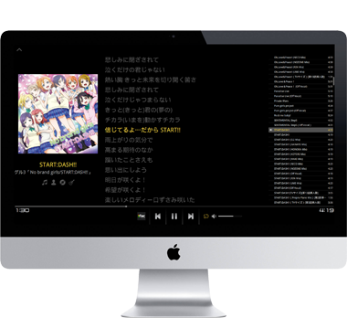

每一首歌曲都是主角
專注，為音樂而生。全新設計的介面讓你的歌曲變得更加耀眼。重新設計的搜索功能讓你不再錯過任何一首歌曲。從現在起，μ能夠自動適應你的螢幕，以便更好的欣賞每一張專輯。而你要做的，就是享受音樂的樂趣。
無損，不失一切
播放音樂是播放機的基石，音質即是播放機的生命。μ全面支援各種無損音樂格式，亦支援MP3、AAC等常見主流音訊格式。你只需插上耳機，靜坐，傾聽。
隨處開始你的音樂會
堅如磐石的Qt開發架構，能夠讓μ在目前所有的主流的作業系統上運行。強大的基礎提供了強勁的性能與絕佳的使用者體驗。你的電腦已經待命，可以隨時為你開始音樂會。


開源力量
μ基於大量的開源專案構建。我們開放了μ的全部原始程式碼，不僅僅希望μ能夠持續進化，也能夠滿足極客們自訂的欲望。任何人都可以免費獲得μ的原始程式碼和開發文檔，我們也提供及時的線上技術支援。

開始你的音樂會吧